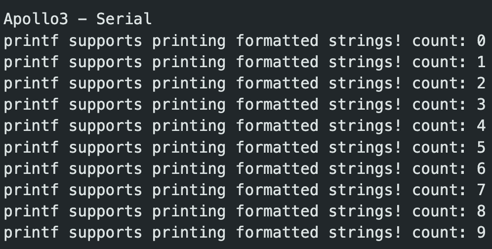
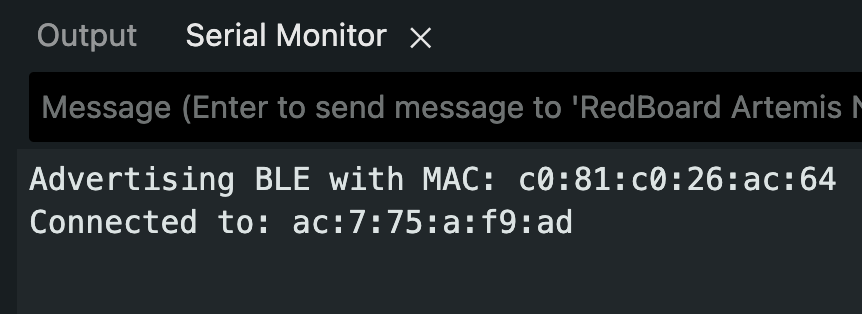
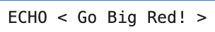
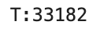
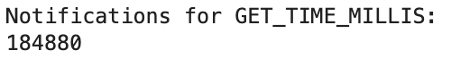
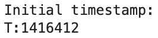
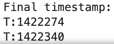
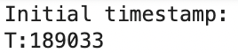
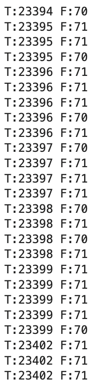

Lab 1: The Artemis Board and Bluetooth
Lab 1a
In section 1a, I set up the Arduino IDE and Artemis board. I installed the latest version of the Arduino IDE and the Sparkfun Apollo boards manager using the json link provided. After that, I ran the following four tasks to get comfortable with the IDE and board.
Blink
/File/Examples/01.BasicsThe blue LED on the board turns on and off in 1 second intervals.
Serial
/File/Examples/Apollo3/Example04_SerialThis file tests that string can be printed in the Serial Monitor.

Analog Read
/File/Examples/Apollo3/Example02_AnalogReadIn the video, as I touch the temperature sensor, the LED indicator gets brighter.
Microphone Output
/File/Examples/PDM/Example1_MicrophoneOutputWhen I snap my fingers, the frequency gets higher.
Lab 1b
In section 1b, I establish a connection between my laptop and the board with the Bluetooth Stack. To prepare for this section, I read this explanation of Bluetooth Low Energy (BLE).
A Quick Summary of BLE
Bluetooth Low Energy (BLE) is optimized for low power and low data rate. A BLE radio acts like a “community bulletin board”. Any computer that connects to the board is like a community member reading the bulletin board.
Radios can act as the bulletin board or community members/readers. A “bulletin board” radio is formally called a peripheral device, and a “reader” radio is a central device.
Peripheral devices present information with services, which are further divided into characteristics. The analogy is this: think of the services as notices on the bulletin, and characteristics as the paragraphs in those notices. Services are identified by unique numbers called UUIDs.
4 Things a Central Device can do with a Characteristic:
- Read: ask the peripheral to send back the current value of the characteristic.
- Write: modify the value of the characteristic.
- Indicate and Notify: ask the peripheral to continuously send updated values of the characteristic.
Computer Setup
- First, I made sure my python version was <3.14 python3 --version
- I created a project folder and cd into it. mkdir lab1 && cd lab1
- Created the virtual environment and activated it python3 -m venv .venv && source .venv/bin/activate
- Unzipped the codebase into the virtual environment
- Start the Jupyter Server, opens up a tab jupyter notebook
Board Setup
- Installed the ArduinoBLE on ArduinoIDE
- Load and burn the ble_arduino.ino onto board
- MAC address now being printed

Configurations
In order to get the connection with the board working, I needed to make some configurations.
- Updated the Artemis MAC address in connections.yaml
- Generated and updated a new BLEService UUID.
python3 -c "import uuid; print(uuid.uuid4())"I also updated the UUID in ble_arduino.ino on ArduinoIDE. After finishing the configuration on ble_arduino.ino, I upload it onto the board, and run through demo.ipynb.
Tasks
The following tasks are to ensure that we can receive timestamped messages from the board. In order to complete these tasks, I made a lab1.ipynb. I copied the setup code from demo.ipynb which imports command types and the controller set up functions.
# Enable autoreload for smoother notebook iterations
%load_ext autoreload
%autoreload 2
from ble import get_ble_controller
from base_ble import LOG
from cmd_types import CMD
import time
import numpy as np
LOG.propagate = FalseImportant Functions:
- ble.send_command(CMD.{type}, "" ); — sends a command with a specific type along with any additional input.
- ble.start_notify(ble.uuid('RX_STRING'), notification_handler) — start notification process for the RX_STRING characteristic.
- ble.bytearray_to_string(data) — converts a bytearray to string.
Task 1: ECHO Command
For this task, I implemented the ECHO command on the arduino code and sent the command through the Jupyter notebook.
case ECHO:
// Extract the next value from the command string as a character array
char char_arr[MAX_MSG_SIZE];
success = robot_cmd.get_next_value(char_arr);
if (!success)
return;
tx_estring_value.clear();
tx_estring_value.append("ECHO < ");
tx_estring_value.append(char_arr);
tx_estring_value.append(" >");
tx_characteristic_string.writeValue(tx_estring_value.c_str());
Serial.print("Sent back: ");
Serial.print(char_arr);
break;ble.send_command(CMD.ECHO, "Go Big Red!")
s = ble.receive_string(ble.uuid['RX_STRING'])
print(s)Serial Monitor Output:
Jupyter Notebook Output:

Task 2: SEND_THREE_FLOATS
For this task, I implemented the SEND_THREE_FLOATS command on the arduino code, and sent the command through the Jupyter notebook.
case SEND_THREE_FLOATS:
float float_a, float_b, float_c;
// Extract the next value from the command string as an integer
success = robot_cmd.get_next_value(float_a);
if (!success)
return;
success = robot_cmd.get_next_value(float_b);
if (!success)
return;
success = robot_cmd.get_next_value(float_c);
if (!success)
return;
Serial.print("Three Floats: ");
Serial.print(float_a);
Serial.print(", ");
Serial.print(float_b);
Serial.print(", ");
Serial.print(float_c);
break;ble.send_command(CMD.SEND_THREE_FLOATS, ".5|.3|.2")Serial Monitor Output:
Task 3: GET_TIME_MILLIS
For this task, I needed to add a new command type in cmd_types.py on the Jupyter server side. I also added the enum to the CommandTypes. Finally, I implemented the command on ble_arduino.ino and uploaded it to the board.
case GET_TIME_MILLIS:
tx_estring_value.clear();
tx_estring_value.append("T:");
tx_estring_value.append((int)millis());
tx_characteristic_string.writeValue(tx_estring_value.c_str());
break;ble.send_command(CMD.GET_TIME_MILLIS, "")
s = ble.receive_string(ble.uuid['RX_STRING'])
print(s)Jupyter Notebook Output:

Task 4: Notification Handler for GET_TIME_MILLIS
This task builds upon task 3. A notification handler has two arguments, the UUID of the sender, which in this case is ble.uuid['RX_STRING'], and the data in the characteristic, which is a bytearray. The notification handler function converts the data from a byte array to a string. We then extract the string with simple python string slicing.
def notification_handler(sender_uuid, data):
decoded = ble.bytearray_to_string(data)
print(decoded[2:])
ble.start_notify(ble.uuid['RX_STRING'], notification_handler)
print("Notifications for GET_TIME_MILLIS:")
ble.send_command(CMD.GET_TIME_MILLIS, "")Jupyter Notebook Output:

Task 5: GET_TIME_MILLIS Loop
For this task, I called the GET_TIME_MILLIS command 100 times. Then, I noted the initial and final timestamp. As seen in the notebook output, the initial time stamp was 1416412, and the final time stamp was 1422340. Each message contains 9 characters, including the "T:". Each character is 1 byte, so each message is 9 bytes. Therefore, there were 900 bytes of data sent over 1422340 - 1416412 = 5928ms. With a simple ratio calculation, the rate is ~150 bytes/sec.
def notification_handler(sender_uuid, data):
decoded = ble.bytearray_to_string(data)
print(decoded)
ble.start_notify(ble.uuid['RX_STRING'], notification_handler)
print("Starting notifications and loop...")
for i in range(100):
if i == 0:
print("Initial timestamp: ")
if i == 99:
print("Final timestamp: ")
ble.send_command(CMD.GET_TIME_MILLIS, "")Jupyter Notebook Output:


Task 6: SEND_TIME_DATA
First, I added the SEND_TIME_DATA command to cmd_types.py in the Jupyter server and in the enum in the arduino code. Then, I implemented the SEND_TIME_DATA case in the arduino code. There is a timestamp_arr variable of size 100 at the top of ble_arduino.ino which I use in the implementation. On the Jupyter code side, I wrote a new notification handler that prints the timestamp. After I call the start_notify and send the SEND_TIME_DATA command to the board, we count the number of timestamps returned to ensure it is 100, and it is.
case SEND_TIME_DATA:
for (int i = 0; i < 100; i++) {
timestamp_arr[i] = int(millis());
}
for (int j = 0; j < 100; j++) {
tx_estring_value.clear();
tx_estring_value.append("T:");
tx_estring_value.append(timestamp_arr[j]);
tx_characteristic_string.writeValue(tx_estring_value.c_str());
}
break;def time_notification_handler(sender_uuid, data):
decoded = ble.bytearray_to_string(data)
print(decoded)
ble.start_notify(ble.uuid['RX_STRING'], time_notification_handler)
ble.send_command(CMD.SEND_TIME_DATA, "");Jupyter Notebook Output:
There were 100 total messages in the output, but it was too long to paste all of it.

The final timestamp was:
Task 7: GET_TEMP_READINGS
For this task, I introduced a new array of the same size as timestamps_arr, 100. Similarly to before, I added the command to cmd_types.py and the enum in the arduino code. I added a global variable, temps_arr to reference in the command’s implementation. This command is very similar to SEND_TIME_STAMPS, but I add additional temperature information, which I get using the getTempDegF() function. I found this function looking in the Apollo3 AnalogRead example on ArduinoIDE. After burning the updated code onto the board, I wrote a notification handler that prints timestamp and temperature info. On the Jupyter code, I call start_notify, then call the command 100 times in a loop.
case GET_TEMP_READINGS:
for (int i = 0; i < 100; i++) {
timestamp_arr[i] = int(millis());
temps_arr[i] = getTempDegF();
}
for (int j = 0; j < 100; j++) {
tx_estring_value.clear();
tx_estring_value.append("T:");
tx_estring_value.append(timestamp_arr[j]);
tx_estring_value.append(" F:");
tx_estring_value.append(temps_arr[j]);
tx_characteristic_string.writeValue(tx_estring_value.c_str());
}
break;def time_and_temps_notification_handler(sender_uuid, data):
decoded = ble.bytearray_to_string(data)
print(decoded)
ble.start_notify(ble.uuid['RX_STRING'], time_and_temps_notification_handler)
ble.send_command(CMD.GET_TEMP_READINGS, "")Jupyter Notebook Output:
Note, the complete output was cutoff!

Task 8: Analysis of Methods
During this lab, I used two different methods of sending and receiving data from the board. The first method continuously calls the GET_TIME_MILLIS command in a loop. As we saw in task 5, we were able to send 100 timestamps over ~6000 ms, or 6 seconds. The other method was collecting data on the board, then sending it by looping through the stored data in an array. This method used no loop on the client side. Looking at the Task 6 images, the initial timestamp was 189033 ms, and the final timestamp was 189035 ms. We were able to receive 100 messages in 2 ms. This is substantially more messages per second received than the first method. Method 1 would be a better option for streaming in data over a longer period of time. Method 2 would be better for precise information, which would be better suited for controlling a robot through feedback, since more information from sensors will be received over less time.
The Artemis board has 384 kB of RAM. The ArduinoIDE shows that global variables take up 30952 bytes of memory, which leaves us with 353048 bytes. If we are considering a data point to simply be a timestamp and temperature point (getTempDegF() call), both as ints, a single data point is 4 + 4 = 8 bytes. 353048 / 8 = 44131. Therefore, we can store a total of 44,131 data points before the board runs out of memory.
Discussion
During this lab, I worked on setting up my workspace and connecting my laptop and the Artemis board through bluetooth. I learned about how BLE works, especially how data is sent and accessed through different characteristics. I got comfortable uploading code to the board through the ArduinoIDE, interacting with the code through Jupyter Lab, and debugging with the Serial Monitor.
The most challenging part of the lab was understanding how to write the notification handler functions used by the start_notify() function. It also took me some time to figure out how I was going to calculate the rate of messages sent.
During debugging, I ran into several issues but was able to resolve them. I didn’t order my command cases the same as my enums, which caused problems. The stop_notify() function had to be called every time I called a start_notify(), or else I’d get errors.
Collaboration
For this lab, I referenced two student pages, Lucca Correia and Rachel Arena, for help with SEND_TIME_DATA and specific parts of the code. I also used ChatGPT to help style my entire website, making sure my code and explanations were displayed properly.